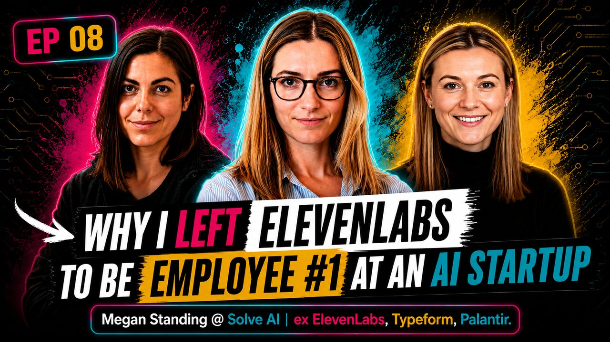

This Week's Rundown
The Chart
Newest first — ▲ new entry at the top
11


Co-host Episode
Our Ride or Die AI Workflows
The season one bonus. Two operators, zero engineering background, one bot army. Every automation Ceci and Bea actually run: the finance operating system, the invoice fairy, the mean meeting coach, and the stack that produces this podcast.
▶
10

Guest Episode
Inside Sana's $1.1B Exit: The Operating Principles That Made It
Olivia Elf joined Sana at 20 people and rode it to a $1.1B Workday acquisition. The operating principles that built it: giving away your Legos, Sanyans have no toes, fully uncapped roles, fractionally beautiful.
▶
09

Co-host Episode
Is Chief of Staff a Dead End or a Launching Pad? Life After Chief of Staff
The season finale. Two thirds of Chiefs of Staff get promoted, but the average tenure is two years. Ceci and Bea map every realistic exit from the role, finance, COO, founder, VC, chief of automation, and admit it has an expiration date.
▶
08


Guest Episode
Why I Left ElevenLabs to Be Employee #1 at an AI Startup
Megan Standing scaled ElevenLabs from 30 to over 300 people in 18 months, then left to be employee #1 and Chief of Staff at Solve AI. Holding the hiring bar in hypergrowth, why the first hire was ops not engineering, and what a decade in talent gives a Chief of Staff.
▶
07

Co-host Episode
8 Ways the Chief of Staff Role Fails (And How to Fix It)
Two Chiefs of Staff name the eight ways the role quietly goes wrong, from never letting go of execution to invisible work, with the honest fix for each. They set out to blame everyone else and kept landing on themselves.
▶
06

Guest Episode
Clara Ma, from Hugging Face CoS to Ask a Chief of Staff Founder. Are Chiefs of Agents the New Chiefs of Staff?
Clara Ma, founder of Ask a Chief of Staff and Hugging Face's first CoS, on the rise of the "Chief of Agents", why the role can't be automated away, and her 30-60-90 day playbook for any new CoS.
▶
05

Co-host Episode
WTF does a Chief of Staff actually do? Our day by day schedules
Two Chiefs of Staff swap weekly calendars. Daily CEO syncs vs weekly ones, IC days vs manager days, 180-page board decks vs one-page agendas. Same title, two genuinely different jobs.
▶
04

Guest Episode
Do You Really Need a Chief of Staff and How Much Should You Pay Them?
Gaby of Robin on diagnosing what kind of right hand a founder actually needs, the real difference between a Chief of Staff and a Founder's Associate, and what fair pay looks like at Series B in London.
▶
03

Co-host Episode
Will Chiefs of Staff survive the age of AI?
Two operators on the automations they've already built, and why the best Chiefs of Staff are about to become 10x more valuable.
▶
02

Guest Episode
Alejandra Otero: First Principles and Operational Excellence at ElevenLabs
Chief of Staff at ElevenLabs on the Barcelona dinner that changed everything, building a rocket ship at $330M ARR, and why first principles thinking is the job.
▶
01

Co-host Episode
From the Board to the Trenches
Two ex-VCs on why they left the boardroom behind, and what nobody tells you about becoming an operator.
▶